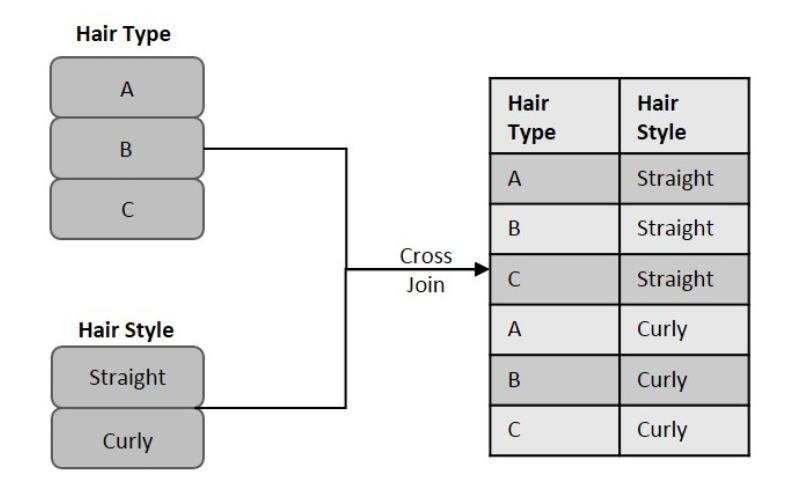

An SQL Cross Join is a basic type of inner join that is used to retrieve the Cartesian product (or cross product) of two individual tables.
That means, this join will combine each row of the first table with each row of second table (i.e. permutations).
The sample figure below illustrates the cross join in a simple manner.
As you can see, we considered two table columns: Hair Style and Hair Type. Each of these columns contain some records that need to be matched. Hence, using cross join, we combine each record in the "Hair Style" column with all records in the "Hair Type" column.
The resultant table obtained is considered as the Cartesian product or Joined table.
SELECT column_name(s)
FROM table1
CROSS JOIN table2;
Assume we have created a table named CUSTOMERS, which contains the personal details of customers
including their name, age, address and salary etc., using the following query:
CREATE TABLE CUSTOMERS (
ID INT NOT NULL,
NAME VARCHAR (20) NOT NULL,
AGE INT NOT NULL,
ADDRESS CHAR (25),
SALARY DECIMAL (18, 2),
PRIMARY KEY (ID)
);
Now, insert values into this table using the INSERT statement as follows:
INSERT INTO CUSTOMERS VALUES
(1, 'Ramesh', 32, 'Ahmedabad', 2000.00 ),
(2, 'Khilan', 25, 'Delhi', 1500.00 );
The table will be created as:Let us create another table ORDERS, containing the details of orders made and the date they are made on.
CREATE TABLE ORDERS (
OID INT NOT NULL,
DATE VARCHAR (20) NOT NULL,
CUSTOMER_ID INT NOT NULL,
AMOUNT DECIMAL (18, 2)
);
Using the INSERT statement, insert values into this table as follows
INSERT INTO ORDERS VALUES
(100, '2009-10-08 00:00:00', 3, 1500.00),
(101, '2009-11-20 00:00:00', 2, 1560.00);
INSERT INTO ORDERS VALUES
(100, '2009-10-08 00:00:00', 3, 1500.00),
(101, '2009-11-20 00:00:00', 2, 1560.00);
The table is displayed as follows:Now, if we execute the following Cross Join query on these two tables given above, the cross join
combines each row in CUSTOMERS table with each row in ORDERS table.
SELECT ID, NAME, AMOUNT, DATE
FROM CUSTOMERS
CROSS JOIN ORDERS;